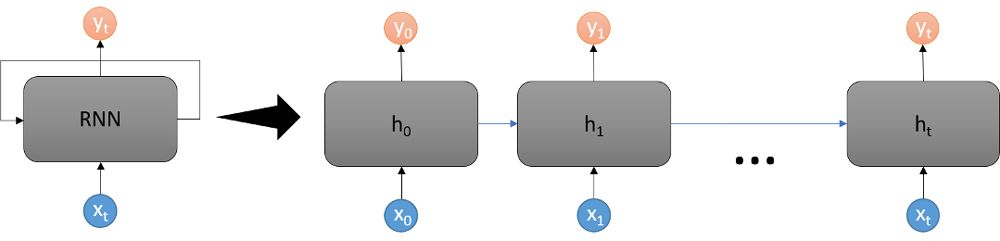

Introduction and Overview
Source: Mathworks.com
A recurrent neural network (RNN) is a type of neural network that uses past data to influence future output and prediction. The output of one "neuron" is the fed in as the input to the next neuron. Each neuron is then assigned a weight that is determined during training. Once training is complete, a set of data is fed into the RNN and with the given weights in place, calculations are performed to determine the output.
Unfortunately, this sequential input and output chaining results in a problem known as "vanishing" or "exploding" gradients. In situations were the weights are less than 1, they multiply toward 0 and in situations where the weights are greater than 1, they can increase exponentially. To translate this from math into its conceptual idea, the RNN suffers from a narrow context window, with any value beyond a given number of neurons no longer influencing the current neuron's output.
LSTM
To solve the issue with vanishing or exploding gradients, a sub-algorithm, developers introduced (Long Short Term Memory). This special type of RNN introduces a mechanism which allows selectivity in how the hidden state and output state are brought to the next step.
There also exists a bi-directional LSTM which can learn dependencies between time steps within a time series.
Use Cases
- Signal Processing: since signals are usually sequencial data, RNNs allow classification and regression to be run against data in real time.
- Text Analytics: while not as popular as their Transformer cousin in the modern AI landscape, RNNs, especially LTSM based RNN, are great at text analysis and classification.